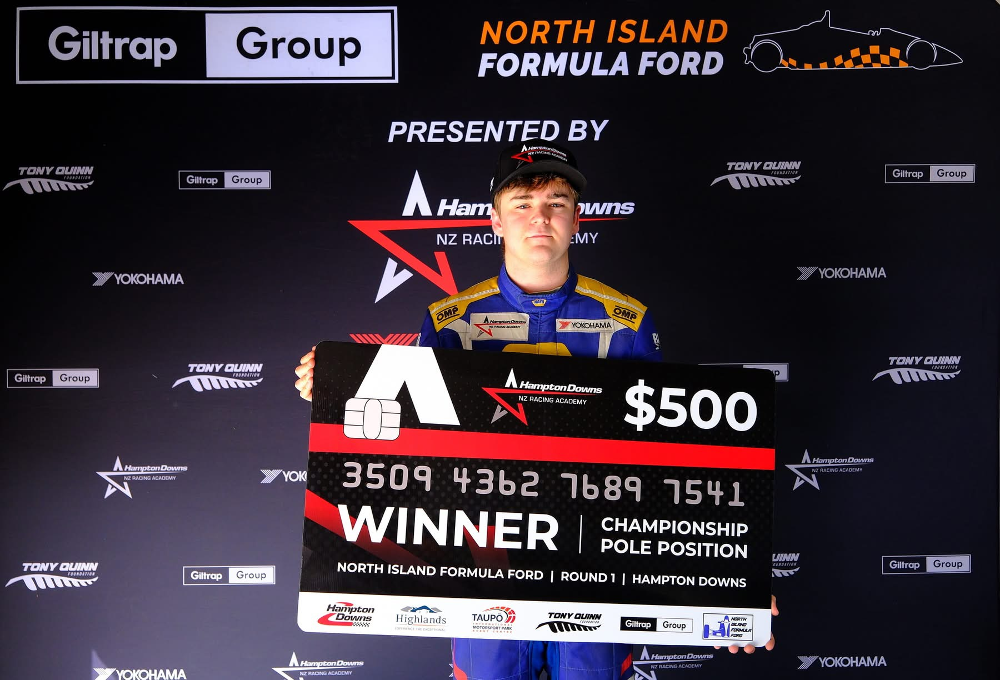

Dylan Grant Racing
Dylan Grant Racing
 #20 • New Zealand
#20 • New ZealandChasing the kiwi motorsport dream!
Dylan Grant — Auckland-born racing driver stepping into the TA2 New Zealand Championship after title‑winning success in Formula Ford.
~204
Races
37
Wins
82
Podiums
35
Fastest laps

Latest Move — TA2 New Zealand
For 2025/26, Dylan steps up to the fiercely competitive TA2 New Zealand Championship — a V8-powered category focused on driver skill and close racing. No traction control, no ABS.
Explore the category, car specs, and calendar: TA2 NZ →
Partners
DGR collaborates with brands to deliver measurable value — on and off the track.
Explore PartnershipsGallery